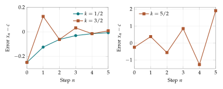

A thermostat, a stockroom reorder rule, and a learning algorithm share a basic structure. Each observes a current state, compares it with a desired state, and makes a correction. Repeating a sensible correction can produce smooth adjustment, repeated overshooting, or growing instability. The size of the correction matters as much as its direction.
Chapter 1 gave us a language for changes. In this chapter we use it to prescribe changes and study what repeated updates do. We will first solve a feedback model completely. Then we will return to population proportions, where the advantage of a type can depend on how common it is.
An update rule generates a trajectory
A difference equation, also called a recurrence, specifies how a sequence is generated. An equation of the form \[x_{n+1}=F(x_n)\] says: apply the function \(F\) to the current state to obtain the next one. Given \(x_0\), compute \(x_1=F(x_0)\), then \(x_2=F(x_1)\), and continue. The resulting sequence is a trajectory or orbit.
We can express the same rule using the first difference: \[\Delta x_n=F(x_n)-x_n.\] The first form emphasizes the next state; the second emphasizes the change. When designing a controller, the change form is often easier to interpret.
A model also needs a set of permitted states. A temperature can take many real values. A probability must stay between zero and one. A formula can make algebraic sense while sending a probability outside its permitted interval. Checking the state space is therefore part of understanding the recurrence.
Example. A small inventory correction
Suppose \(x_n\) is the stock level at the start of a weekly restocking cycle, measured in crates. The target is ten crates. A simplified rule replaces half the gap: \[\Delta x_n=\frac12(10-x_n).\] Starting from two gives changes of four, two, and one, hence stock levels \(2,6,8,9\). These values can be interpreted as average stock levels if fractions occur. The rule describes a correction step; a full inventory model would also specify incoming orders and customer demand.
Subtracting the target reveals the structure
Write the general correction rule as \[\Delta x_n=-k(x_n-c),\] where \(c\) is a target and \(k\) is the correction strength. If \(x_n<c\), the gap \(x_n-c\) is negative, so the prescribed change is positive when \(k>0\). If \(x_n>c\), the prescribed change is negative.
Expanding the difference gives \[x_{n+1}=x_n-k(x_n-c)=c+(1-k)(x_n-c).\] The state \(c\) is a fixed point: starting there gives zero change and leaves the state there forever. In general, a fixed point of \(F\) satisfies \(F(c)=c\).
Let \(e_n=x_n-c\) be the error. Subtract \(c\) from both sides of the update: \[e_{n+1}=(1-k)e_n.\] This is the geometric recurrence from Chapter 1. Therefore \[e_n=(1-k)^n e_0,\qquad \boxed{x_n=c+(1-k)^n(x_0-c).}\] Introducing the error has turned a recurrence with a constant term into repeated multiplication. It also gives a direct answer to the question of long-term behavior.
Example. A replenishment rule with an implicit target
Suppose a stockroom retains eighty percent of its stock after a day’s use and then receives six replacement units. Its simplified recurrence is \[x_{n+1}=0.8x_n+6.\] The target is not stated in advance. Find a fixed point by asking what stock level reproduces itself: \[c=0.8c+6,\qquad 0.2c=6,\qquad c=30.\] Subtracting thirty gives \(x_{n+1}-30=0.8(x_n-30)\). Starting from ten, the first values are \(10,14,17.2,19.76\). The formula is \[x_n=30+0.8^n(10-30).\] A balance between removal and replenishment creates the equilibrium. At thirty units, the six units used match the six received.
More generally, for \(x^+=ax+b\) with \(a\ne1\), the fixed point is \(c=b/(1-a)\) and the error multiplier is \(a\). At \(a=1\), the rule is repeated addition: if \(b=0\), every state is fixed; if \(b\ne0\), there is no fixed state. Solving the fixed-point equation before dividing prevents this exceptional case from being lost.
How corrections can settle or overshoot
The multiplier \(1-k\) controls both the sign and the size of the error. A negative multiplier crosses the target. A multiplier whose absolute value is less than one shrinks the error.
| Correction strength | Error multiplier | Behavior from a nonzero error |
|---|---|---|
| \(0<k<1\) | \(0<1-k<1\) | Approaches the target from one side |
| \(k=1\) | \(0\) | Reaches the target in one step |
| \(1<k<2\) | \(-1<1-k<0\) | Crosses the target with shrinking errors |
| \(k=2\) | \(-1\) | Alternates with unchanged error size |
| \(k>2\) | \(1-k<-1\) | Crosses the target with growing errors |
At \(k=0\), nothing changes. For \(k<0\), a nonzero error grows because the correction points away from the target. For this model, attraction occurs exactly when \[\boxed{|1-k|<1,\quad\text{or equivalently }0<k<2.}\]
Example. Three correction strengths at the same target
Take \(c=1/2\) and \(x_0=1/4\). With \(k=1/2\), the states begin \[\frac14,\quad\frac38,\quad\frac7{16},\quad\frac{15}{32}.\] With \(k=3/2\), they begin \[\frac14,\quad\frac58,\quad\frac7{16},\quad\frac{17}{32}.\] Both errors halve in magnitude each step; the second trajectory crosses the target. With \(k=5/2\), the states begin \[\frac14,\quad\frac78,\quad-\frac1{16}.\] The errors grow by a factor of \(3/2\). The last value also shows that this rule does not preserve the probability interval for these parameters.
A fixed point is attracting if trajectories starting sufficiently near it approach it. It is stable if sufficiently small initial errors remain small at all later steps. The case \(k=2\) illustrates the distinction: small errors remain small but never shrink to zero. For \(0<k<2\), the fixed point is both stable and attracting. We will normally describe this behavior as settling toward the target.
For \(0\leq k\leq1\) and \(c\in[0,1]\), the formula \(x^+=(1-k)x+kc\) is a weighted average of two points in the interval, so it stays in the interval. Attraction for \(1<k<2\) does not provide that same global guarantee. Stability and preservation of the permitted state space are separate checks.
The explicit formula also tells us how quickly a desired accuracy is reached. For the inventory rule, the starting error has magnitude twenty. To reduce it below one unit, require \[20(0.8)^n<1.\] Integer powers give \(20(0.8)^{13}\approx1.10\) and \(20(0.8)^{14}\approx0.88\). Thus fourteen steps suffice and thirteen do not. The trajectory never equals thirty at a finite step from this starting state, but it eventually lies within any positive tolerance.
A useful robustness question compares two initial states under the same rule. If \(x_n\) and \(y_n\) obey affine feedback with the same target and strength, then \[x_{n+1}-y_{n+1}=(1-k)(x_n-y_n).\] Initial disagreement shrinks at the same rate as the target error when \(0<k<2\). This compares whole trajectories, rather than comparing a single trajectory with a fixed point. It is an early example of contraction: a rule can systematically reduce the difference between states.
The word eventually concerns the tail of an infinite sequence. We can still make it concrete by giving a tolerance and a finite step after which the bound holds. In later chapters, information inequalities will provide similar stopping estimates for probability models.

Fixed points are found before trajectories are solved
For a more complicated function \(F\), an explicit formula for every \(x_n\) may be unavailable. We can still look for fixed points by solving \(F(x)=x\), and then examine the increment \(F(x)-x\).
If the increment is positive below a candidate target and negative above it, single steps point toward the target. This is useful information, but the overshooting example shows why direction alone is incomplete. A large step can jump across the target and leave a larger error.
A practical investigation therefore records three items: the current state, the increment, and the new distance from the candidate fixed point. Numerical evidence can suggest attraction or instability. A proof needs an identity or inequality that covers every relevant step.
Interactions make advantages depend on composition
In Chapter 1, one type always had the same relative multiplier. Many applications involve feedback: a strategy performs well when rare but poorly when common. A shared resource might support several methods of use, with the success of each depending on the mixture.
A payoff matrix records scores for pairwise encounters. For two types, write \[M=\begin{pmatrix}a&b\\c&d\end{pmatrix}.\] The row gives the focal type; the column gives the encountered type. Thus \(b\) is the score of an \(A\) individual encountering \(B\). The entries are scores, not probabilities, so they need not add to one.
Assume encounters are sampled according to the population proportions \(x\) and \(1-x\). The expected scores are weighted averages: \[f_A(x)=ax+b(1-x),\qquad f_B(x)=cx+d(1-x).\] For instance, if one quarter of encounters are with \(A\), the \(A\) score is one quarter of \(a\) plus three quarters of \(b\).
Subtract the two scores and call the result \(d(x)\): \[d(x)=f_A(x)-f_B(x)=(b-d)+(a-b-c+d)x.\] We use \(d(x)\) for a score gap; the symbol \(\Delta x\) remains reserved for a change between time steps.
Example. An advantage that reverses
For \[M=\begin{pmatrix}2&4\\3&1\end{pmatrix},\] the scores are \(f_A=4-2x\) and \(f_B=1+2x\). Thus \(d(x)=3-4x\). At \(x=1/4\), the scores are \(7/2\) and \(3/2\), favoring \(A\). At \(x=9/10\), they are \(11/5\) and \(14/5\), favoring \(B\). They agree at \(q=3/4\), where both equal \(5/2\). This table creates feedback toward coexistence.
The encounter assumption matters. If individuals preferentially meet their own type, the weights need to reflect that preference. A matrix by itself does not specify how encounters are selected.
The table can be understood as a stylized model of two ways to use a shared resource. A method’s score depends on which method it encounters. If a rare method receives a large score against the common one, rarity can be advantageous. If each method performs best among its own type, commonness can reinforce itself.
The numbers in a payoff table need an interpretation before a population update follows. They might represent a measured benefit, a relative reproductive score, or a reward assigned by an algorithm. The table specifies the result of an encounter; the averaging assumption specifies the mix of encounters; the conversion to multipliers specifies how scores affect the next population. Keeping these modeling steps visible makes it possible to change one assumption without confusing it with the others.
At a composition \(x=1/4\), for instance, the coexistence table predicts three times as many encounters with \(B\) as with \(A\). The average score \(f_A=(1/4)2+(3/4)4=7/2\) is between two and four. This interval check is a useful way to catch reversed weights or a mistaken row convention.
Turning a score into a multiplier
A population multiplier must be nonnegative, and we will use strictly positive multipliers. Scores may be negative. We therefore state an explicit conversion.
The linear multiplier rule is \[w_i=1+\eta f_i,\] where \(\eta>0\) controls the intensity. It requires \(1+\eta f_i>0\) for every score that can occur. If every possible score is at least \(-2\), for example, choosing \(0<\eta<1/2\) ensures positivity.
The exponential multiplier rule is \[w_i=e^{\eta f_i}.\] Here \(e\approx2.71828\). An exponential satisfies \(e^{u+v}=e^u e^v\) and is positive for every real exponent. Negative scores give multipliers between zero and one. A calculator’s exponential key evaluates them; the identities and positivity are the properties we need.
Normalize either set of multipliers as in Chapter 1. For the linear choice, \[x^+=\frac{x(1+\eta f_A)}{1+\eta\bar f},\qquad \bar f=xf_A+(1-x)f_B.\] Subtracting \(x\) gives \[\Delta x=\frac{\eta x(1-x)d(x)}{1+\eta\bar f}.\] For the exponential choice, \[x^+=\frac{xe^{\eta f_A}}{xe^{\eta f_A}+(1-x)e^{\eta f_B}}.\] Its increment has the sign of \(e^{\eta f_A}-e^{\eta f_B}\), hence the sign of \(d(x)\). Both rules preserve the interval and have the same interior fixed points. Their step lengths can be very different.
Example. One score gap, two sizes of correction
At \(x=1/4\) for the preceding table, take \(\eta=1\). Linear multipliers are \((9/2,5/2)\), giving \[x^+=\frac{(1/4)(9/2)}{(1/4)(9/2)+(3/4)(5/2)}=\frac38.\] For exponential multipliers, cancel the common factor \(e^{3/2}\): \[x^+=\frac{e^2}{e^2+3}\approx0.7112.\] Both changes are positive. The second is much larger.
A convergence proof built from the error
For the coexistence table, the linear rule approaches \(q=3/4\) without crossing it, for every \(\eta>0\). We can prove this by repeating the error calculation used for simple feedback.
First, \[\bar f=x(4-2x)+(1-x)(1+2x)=1+5x-4x^2.\] Since \(d(x)=-4(x-q)\), subtracting \(q\) yields \[x^+-q=(x-q)\left(1-\frac{4\eta x(1-x)}{1+\eta\bar f}\right).\] For \(0<x<1\), the subtracted fraction is positive. It is also less than one, because \[1+\eta\bar f-4\eta x(1-x)=1+\eta(1+x)>0.\] Thus the parenthesized factor lies strictly between zero and one. The error keeps its sign and shrinks.
A trajectory starting below \(q\) rises but cannot cross \(q\). It is increasing and bounded above, so its values approach a limit. This elementary fact means a quantity cannot keep making positive progress of a fixed minimum size while remaining below a fixed ceiling. The same reasoning applies to a decreasing sequence bounded below.
The rational update is continuous on the interval because its denominator is positive. Substituting the limit into the recurrence shows that it must be a fixed point. The only fixed point between the starting value and \(q\) is \(q\) itself. This completes the convergence argument.
The proof does more than a sign diagram: it controls crossing, establishes a limit, and identifies that limit. These are distinct steps in a stability argument.
The error identity suggests a general method. Suppose a recurrence has a fixed point \(q\) and can be written \[x^+-q=(x-q)R(x).\] If \(0<R(x)<1\) throughout a relevant interval, each nonfixed state moves toward \(q\) without crossing it. If a uniform bound \(R(x)\leq\rho<1\) is available, then repeated errors satisfy \[|x_n-q|\leq\rho^n|x_0-q|.\] This gives a rate as well as a direction. If \(R\) is negative, crossings occur; a bound \(|R(x)|<1\) controls whether those crossings shrink.
A statement about the sign of the increment answers a slightly different question. Below \(q\), \(\Delta x>0\) says the next point lies to the right of the current one. It does not specify whether it lies before or beyond \(q\). Drawing the current point, the target, and the computed next point on a line is often the clearest first check.
When investigating a nonlinear recurrence numerically, start on both sides of the proposed equilibrium and choose more than one distance from it. A very short trajectory near a slowly moving state may look stationary at the displayed precision. Record extra digits or record the error explicitly. Then ask what algebraic feature could explain the observed behavior.
Thresholds, strong updates, and model choices
A different table can reverse the feedback. For \[M=\begin{pmatrix}4&1\\2&3\end{pmatrix},\] the score gap is \(4x-2\). Below one half, \(x\) decreases; above one half, it increases. The middle fixed point acts as a threshold. Under either positive multiplier rule, trajectories starting below it approach zero and those starting above it approach one. The direction of every step and boundedness give the convergence argument.
For the coexistence table, exponential updates can overshoot. At \(x=1/4\) with \(\eta=2\), \[x^+=\frac{e^4}{e^4+3}\approx0.9479>\frac34.\] Positivity ensures a valid probability, but does not ensure a small correction. This is the same distinction discovered in the affine feedback model.

Adding a common number \(C\) to every current score leaves exponential normalization unchanged, because each weight acquires the same factor \(e^{\eta C}\). Scaling all scores by a positive factor is equivalent to scaling \(\eta\).
For linear multipliers, a common shift changes the effective intensity. When \(1+\eta C>0\), \[1+\eta(f_i+C)=(1+\eta C)\left(1+\frac{\eta}{1+\eta C}f_i\right).\] The common first factor cancels. The resulting trajectory uses intensity \(\eta/(1+\eta C)\) for the original scores. Reporting an update therefore requires the score table, its conversion to multipliers, and its intensity.
Use the sequence view of the operator explorer to compare feedback trajectories, and the payoff demonstration to test the coexistence table. Keep the starting state fixed while changing one parameter. Then compare the signs and magnitudes of successive errors.
With three types, a single proportion no longer specifies the state. Chapter 3 replaces the interval by a triangle and gives us a way to measure changes in several directions.
Exercises
- For \(\Delta x_n=\tfrac12(10-x_n)\) and \(x_0=2\), find four updates and a formula for \(x_n\).
- With \(c=1/2\) and \(x_0=1/4\), calculate the first four states for \(k=3/2\). Give the error multiplier.
- Repeat Exercise 2 for \(k=2\) and \(k=5/2\). Classify the behavior and check whether the values remain probabilities.
- Prove that \(x^+=(1-k)x+kc\) preserves \([0,1]\) when \(c\in[0,1]\) and \(0\leq k\leq1\).
- Explain the difference between solving \(F(c)=0\) and solving \(F(c)=c\). Give a recurrence for which the two equations have different solutions.
- For \(M=\left(\begin{smallmatrix}5&-1\\2&3\end{smallmatrix}\right)\), find \(f_A,f_B,d(x)\) and the interior equal-score state.
- Give a sufficient range of positive \(\eta\) for the linear multipliers in Exercise 6 to remain positive at every composition.
- For the coexistence table, calculate one linear and one exponential update at \(x=1/2\), \(\eta=1\).
- Verify the no-crossing proof for the linear coexistence rule by expanding its average score and error factor.
- Starting at \(x=1/4\), compute four exponential coexistence updates with \(\eta=2\). Record the side of \(3/4\) occupied after each step.
- Prove invariance of exponential normalization under a common score shift. Explain why the same conclusion need not hold for linear multipliers.
- Design a numerical investigation of attraction to a fixed point. State the rule, the parameter, the initial states, the recorded errors, and what remains unproved by a finite run.
Selected exercise solutions
1. The values are \(2,6,8,9,19/2\). The error is multiplied by one half, so \(x_n=10-8(1/2)^n\).
2. The first four states, including the initial state, are \(1/4,5/8,7/16,17/32\). The error multiplier is \(-1/2\).
3. For \(k=2\), the values alternate \(1/4,3/4\). For \(k=5/2\), they begin \(1/4,7/8,-1/16,43/32\). The first trajectory is stable without attraction; the second has growing errors and leaves the interval.
6. The scores are \(f_A=6x-1\) and \(f_B=3-x\). Their gap is \(7x-4\), which vanishes at \(4/7\).
7. All scores are at least \(-1\), so \(0<\eta<1\) suffices. At the endpoint \(x=0\), the \(A\) score is exactly \(-1\), explaining the strict upper bound.
8. The scores are \((3,2)\). Linear multipliers give \(x^+=4/7\). Exponential multipliers give \(x^+=e/(e+1)\approx0.7311\).